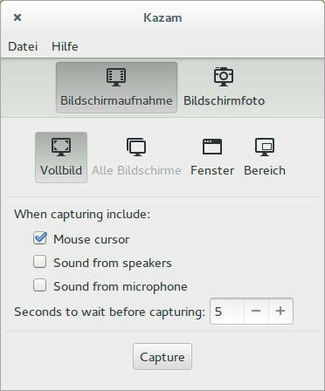
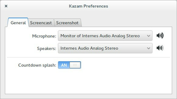

Kazam
Dieser Artikel wurde für die folgenden Ubuntu-Versionen getestet:
Ubuntu 16.04 Xenial Xerus
Ubuntu 14.04 Trusty Tahr
Zum Verständnis dieses Artikels sind folgende Seiten hilfreich:
 Kazam
Kazam  ist eine moderne Software zum Erstellen von Screencasts und Bildschirmfotos, die auch unter Unity und der GNOME Shell funktioniert. Das in Python geschriebene Programm, welches eine GTK3-Oberfläche nutzt, wird vom Entwicklerteam "Three Wise Man" aktiv weiterentwickelt. Diese Anwendung steht unter der Lizenz GPLv3. Kazam nutzt für die Kodierung das Multimedia-Framework GStreamer. Der Ton wird beim Erstellen eines Screencasts über PulseAudio aufgenommen.
ist eine moderne Software zum Erstellen von Screencasts und Bildschirmfotos, die auch unter Unity und der GNOME Shell funktioniert. Das in Python geschriebene Programm, welches eine GTK3-Oberfläche nutzt, wird vom Entwicklerteam "Three Wise Man" aktiv weiterentwickelt. Diese Anwendung steht unter der Lizenz GPLv3. Kazam nutzt für die Kodierung das Multimedia-Framework GStreamer. Der Ton wird beim Erstellen eines Screencasts über PulseAudio aufgenommen.
Folgenden Kodierungen werden unterstützt:
Im Vergleich zu anderen Programmen, die nur offene Kodierungen wie bspw. den Video-Codec Theora enthalten, werden die bei Kazam verwendeten Kodierungen auch auf anderen Plattformen sowie im kommerziellen Umfeld unterstützt. Der Funktionsumfang von Kazam unterscheidet sich in den verschiedenen Ubuntu-Versionen, so dass Abweichungen der hier vorgestellten Funktionen vorhanden auftreten können.

Installation¶
Das Programm ist in den offiziellen Paketquellen enthalten. Folgendes Paket muss installiert [1] werden:
kazam (universe)
 mit apturl
mit apturl
Paketliste zum Kopieren:
sudo apt-get install kazam
sudo aptitude install kazam
PPA¶
Möchte man die neuste Version nutzen, dann kann man diese mit Hilfe eines "Personal Package Archiv" (PPA) [2] installieren:
Adresszeile zum Hinzufügen des PPAs:
ppa:kazam-team/stable-series
Hinweis!
Zusätzliche Fremdquellen können das System gefährden.
Ein PPA unterstützt nicht zwangsläufig alle Ubuntu-Versionen. Weitere Informationen sind der  PPA-Beschreibung des Eigentümers/Teams kazam-team zu entnehmen.
PPA-Beschreibung des Eigentümers/Teams kazam-team zu entnehmen.
Damit Pakete aus dem PPA genutzt werden können, müssen die Paketquellen neu eingelesen werden.
Nach dem Aktualisieren der Paketquellen erfolgt die Installation wie oben angegeben.
Benutzung¶
 Nach der Installation kann man Kazam bei Ubuntu und Ubuntu-GNOME durch Eingabe von "Kazam" in die Suchmaske das Programm finden und mit einem Klick auf das Logo starten [3]. In Xubuntu findet man das Programm im Anwendungsmenü unter "Multimedia → Kazam", bei Kubuntu unter "Multimedia → Kazam".
Nach dem ersten Programmaufruf startet das Hauptfenster der Software. Als erstes legt man fest, ob ein Video aufgenommen werden oder ob nur ein Bildschirmfoto erstellt werden soll. Nun legt man den Bereich, den man aufnehmen will, fest. Hierbei kann man zwischen Vollbild, einem Fenster oder einem beliebigen Ausschnitt wählen. Weiterhin kann man auswählen, ob der Mauszeiger mit aufgenommen werden soll und ob bei einer Bildschirmaufnahme der Ton von einem Mikrofon oder vom System aufgenommen werden soll. Zusätzlich kann man noch eine Verzögerung in Sekunden einstellen, nach der die Aufnahme ausgelöst wird.
Hat man alle Einstellungen getroffen, kann man die Aufnahme mit einen Klick  auf "Capture" auslösen.
auf "Capture" auslösen.
Hinweis:
Durch Auswählen eines Fensters oder eines Bereiches wird die Aufnahme nicht direkt gestartet, sondern muss über "Capture" ausgelöst werden.
Nach Beenden eines Screencasts wird man gefragt, ob man das Video mit einem externen Videoeditor öffnen möchte, oder man es speichern will. Hat man hingegen nur ein Bildschirmfoto erstellt, kann man dieses nur abspeichern. Man kann in den Einstellungen auch eine automatische Speicherung aktivieren.
In der Systemleiste befindet sich außerdem eine weitere Schaltfläche. Ein Rechtsklick  auf das Symbol öffnet ein zusätzliches Menü, in dem man eine Aufnahme starten, anhalten, beenden oder den Countdown abbrechen kann.
auf das Symbol öffnet ein zusätzliches Menü, in dem man eine Aufnahme starten, anhalten, beenden oder den Countdown abbrechen kann.
Einstellungen¶
Unter "Datei → Einstellungen" kann man folgende Einstellungen vornehmen:

| Einstellungen | |
| Reiter | Einstellungsmöglichkeiten |
| "General" | Auswahl des Mikrofons und der Lautsprecher. Zusätzlich kann die Countdown Anzeige an und ausgeschaltet werden. |
| "Screencast" | Einstellung der Bildwiederholungsrate, der Kodierung und Auswahl der automatischen Speicherung für Bildschirmaufnahmen |
| "Screenshot" | Auswahl eines Aufnahmegeräusches und der automatischen Speicherung für Bildschirmfotos |
 Programmübersicht
Programmübersicht- Erstellt mit Inyoka
-
 2004 – 2017 ubuntuusers.de • Einige Rechte vorbehalten
2004 – 2017 ubuntuusers.de • Einige Rechte vorbehalten
Lizenz • Kontakt • Datenschutz • Impressum • Serverstatus -
Serverhousing gespendet von